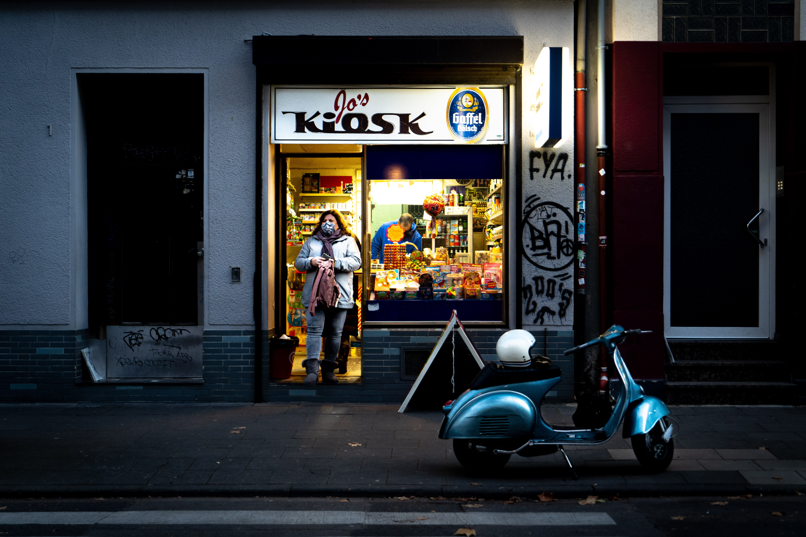
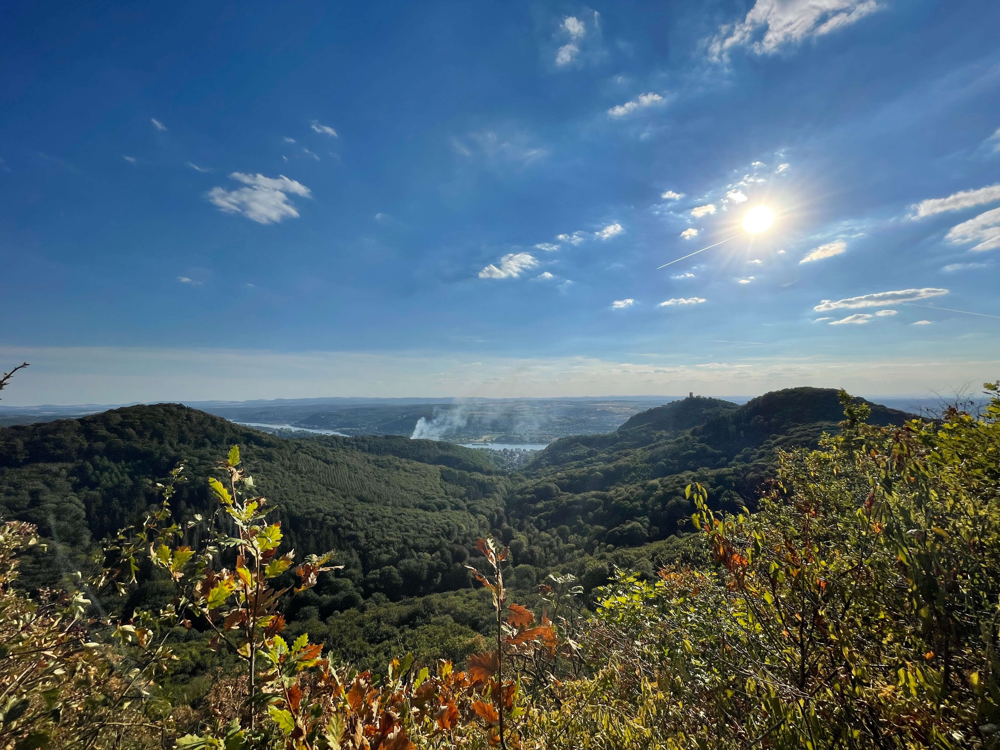

Wandern
Hersel bietet eine wunderschöne Landschaft, perfekt für eine Wandetour

Alkohol konsum
Durch die Nähe zu Köln eignet sich Hersel perfekt für einen geisteskranken Suff

Berge besteigen
Neben flachen Wandertouren sind auch Touren auf die Berge Hersel's möglich